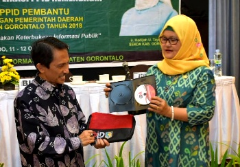

Kemendagri Bekali PPID Kabupaten Gorontalo
14/10/2018
Manado, Dinas Komunikasi dan Informatika (Kominfo) Kabupaten Gorontalo mendatangkan Dr. Handayani Ningrum, SE, M.Si Kepala Bidang Fasilitasi Pengaduan dan Pengelolaan Informasi Kemendagri RI untuk menyampaikan kejelasan implementasi Permendagri Nomor 3 Tahun 2017 tentang Pedoman Pengelolaan Pelayanan Informasi dan Dokumentasi. Pasalnya, Permendagri No. 3 tahun 2017 menyebut, peningkatan pelayanan informasi dan dokumentasi berkualitas perlu pedoman,
Read More...
Kominfo Petakan Infrastruktur TIK
05/10/2018
LIMBOTO – Sejumlah OPD Kabupaten Gorontalo mengirim utusan pada pemantapan rencana induk teknologi informasi dan komunikasi (RITIK) yang digelar Balai Pengembangan Sumber Daya Manusia dan Penelitian (BPSDMP) Kementerian Komunikasi RI – Manado, Rabu (3/10). Dalam kegiatan itu mereka membahas landasan penggembangan TIK sesuai kebutuhan untuk masa lima tahun kedepan. “Penyusunan RITIK kesekian kali tahapannya kami,
Read More...
Tari Kolosal Popa Eyato Menghentak di FPDL 2018
21/09/2018
Penampilan para penari kolosal ‘Popa Eyato’ menghentak pada opening ceremony festival pesona Danau Limboto 2018, Kamis malam (20/9), di pesisir Danau Limboto. Di atas panggung berdekorasi ‘paluwala’ (mahkota khas raja-raja Gorontalo), sebanyak 150 penari mengisahkan perang antara kerajaan Limutu – Hulonthalo yang berujung perdamaian. Dalam sejarah Gorontalo, Raja Popa dari Limutu, dan Raja Eyato dari,
Read More...
Ini Formasi Kebutuhan CPNS di Kabupaten Gorontalo
19/09/2018
LIMBOTO – Pemerintah Kabupaten Gorontalo mengumumkan alokasi formasi kebutuhan Aparatur Sipil Negara (seleksi CPNS) tahun 2018. Dalam daftar kebutuhan ASN yang ditandatangani Bupati Gorontalo, Prof. Dr. Ir. Nelson Pomalingo, M.Pd, tertanggal 18 September 2018, Pemerintah di daerah ini membutuhkan 148 calon pegawai negeri sipil (CPNS), yang akan mengisi jabatan berupa tenaga guru, tenaga kesehatan, dan,
Read More...
Potensi bidang teknologi komunikasi jadi perhatian
13/09/2018
Kepala Dinas Komunikasi dan Informatika Kabupaten Gorontalo, Drs. Hi. R. Azis Nurhamidin, M.Pd, terima Tim Studi Banding DPRD Kota Kotamobagu, di Kantor Dinas Kominfo, Kamis (13/9). Dalam dialog yang berlansung hangat kedua belah pihak membicarakan soal pengelolaan potensi dibidang Teknologi Informasi dan Komunikasi di Kabupaten Gorontalo, antaranya, pengelolaan tower komunikasi dan literasi penggunaan internet bagi,
Read More...
Para Fotografer angkat destinasi wisata masih terpendam
09/09/2018
Salah satu obyek wisata di Kabupaten Gorontalo. (FOTO: Doc. Kominfo) TELAGA BIRU – Sebanyak 34 fotografer di Provinsi Gorontalo akan mengangkat berbagai destinasi wisata yang masih terpendam di wilayah Kabupaten Gorontalo melalui lomba foto obyek wisata yang dihelat Panitia Pelaksanan Festival Pesona Danau Limboto (FPDL) tahun 2018. Pelaksanaan lomba foto dibuka dalam dua kategori, masing-masing,
Read More...
120 Aparat ikut Pemantapan Layanan Masyarakat
31/08/2018
Sekretaris Daerah Kabupaten Gorontalo, Ir. Hadidjah U. Tayeb, M.M, menyampaikan materi pada pelatihan layanan publik yang diikuti ASN, Jumat (30/8) di Gedung BP PAUD DIKMAS Provinsi Gorontalo. (Foto: Djojo/Kominfo) TELAGA BIRU – Pemerintah Kabupaten Gorontalo melatih 120 aparat untuk mengoptimalisasi performance pelayanan publik agar mereka dapat menyelenggarakan pelayanan masyarakat secara berkualitas dan mudah. Pelatihan tersebut,
Read More...
Siap berkompetisi Pekerja Harus Miliki 3 Kriteria, Apa saja?
28/08/2018
Gorontalo – Ada tiga kriteria yang wajib dipenuhi seorang tenaga kerja ketika hendak terjun mengisi peluang di era globalisasi. Demikian ungkap Bupati Gorontalo, Prof. Dr. Ir. Nelson Pomalingo, M.Pd, saat membuka Pelatihan dan Sertifikasi Standar Kompetensi Kerja Nasional Indonesia (SKKNI). Agenda tersebut digelar Pemda Kabupaten Gorontalo di Maqna Hotel Gorontalo, Minggu (26/8). Lantas apa ke,
Read More...